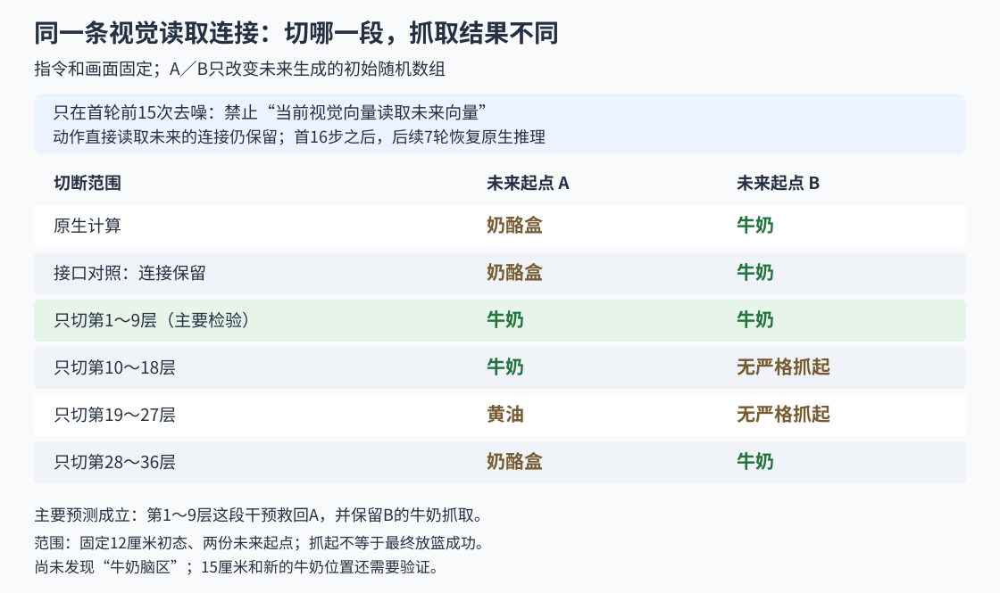
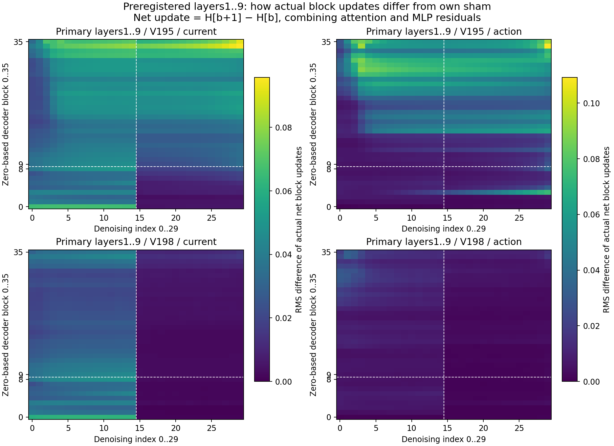
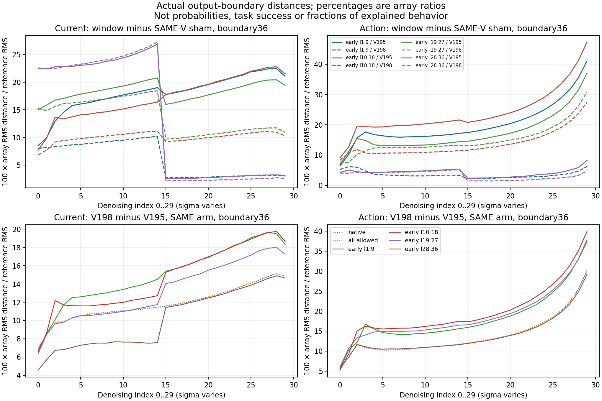
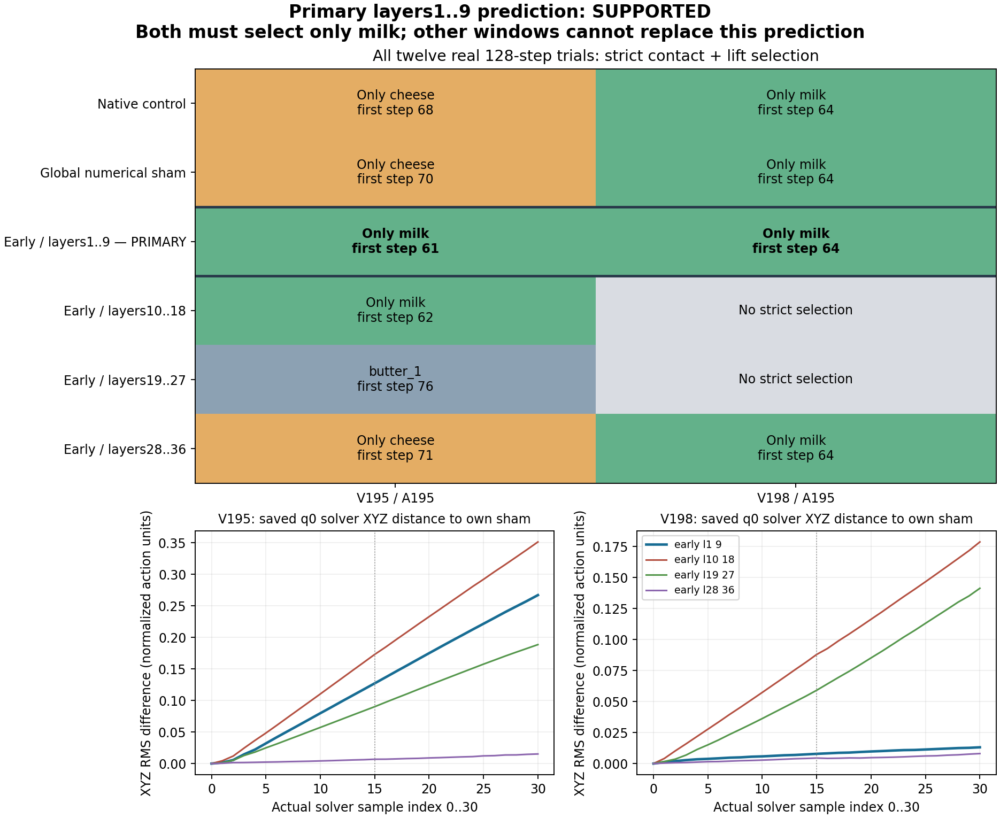

2026-10-04 · 最新：早期去噪的四个9层组 · 代码、真实数组与录像
把范围缩到前9层，A改抓牛奶，B仍抓牛奶。
一直只查这个问题：指令是“抓牛奶，放进篮子”。牛奶移远后却抓奶酪盒。我们要找到导致转抓的具体内部计算，并验证改它能否恢复跟着牛奶抓。
上轮一次切18层：A从奶酪盒改抓牛奶，B却没达到严格抓起条件。我们怀疑切的范围太大，也伤害了原本抓对的计算，于是把36层分成四个9层组，全部测试。
关于“网络有没有语言区、运动区”，下面单独说明已有研究与这次结果各能说明什么。
1. 从18层，缩到四个9层组
照片先变成一组当前视觉向量；网络同时计算用于生成未来画面的向量。原模型允许当前视觉读取未来向量。这次仍只禁止这种读取，动作直接读取未来的连接保留。
文字、照片、机器人初态、动作随机起点都相同。A／B只有未来生成的初始随机数组不同：A原本抓奶酪盒，B原本抓牛奶。它们不是两张照片，也不是两条指令。

两种时间要分开：网络先用30次去噪生成首轮16步动作，我们只在这里改内部连接。机械臂执行完16步后重新拍照；后续7轮恢复原生推理。每条实际执行128步。
所有经过mask接口的组，都在全36层、30次去噪中使用同样的“连接全保留”计算背景，四个9层干预组只在各自登记的135处切边；两条接口对照全程保留连接。这样可以对齐接口带来的数值影响。切边本身仍会重新分配剩下的attention权重，还没有区分“去掉了什么内容”和“改变了读取比例”。
2. 四组全部结果：只有第一组同时保住A和B
事先只把第1～9层的A、B都严格且只抓牛奶定为主要预测。其余三组照样执行并报告，没有根据结果换一个“赢家”。
| 首轮怎么改 | A的严格抓起结果 | B的严格抓起结果 |
|---|---|---|
| 原生计算 | 奶酪盒，第68～72步 | 牛奶，第64～68步 |
| 连接全保留的接口对照 | 奶酪盒，第70～74步 | 牛奶，第64～68步 |
| 前15次 × 第1～9层（主要预测） | 牛奶，第61～65步 | 牛奶，第64～68步 |
| 前15次 × 第10～18层 | 牛奶，第62～66步 | 未达到严格抓起条件 |
| 前15次 × 第19～27层 | 黄油，第76～80步 | 未达到严格抓起条件 |
| 前15次 × 第28～36层 | 奶酪盒，第71～75步 | 牛奶，第64～68步 |
这把候选缩到了早期去噪、第1～9层的这条读取通路。不能据此说这9层只负责牛奶、较高层只负责运动，或已经定位单个head／MLP单元。相同处理位置数也不代表相同扰动强度或相同后续传播机会。
严格抓起判据与接口对照
每份记录都要同时满足：左右指垫接触物体、相对初态抬高严格超过2厘米，连续5份记录。全部物体的129份记录都检查了。未达到条件不等于机械臂没动；抓起也不等于最终放进篮子。
原生与“同样经过mask接口但连接全保留”的对照都保留A奶酪、B牛奶。接口对照不是数值完全不变，因此每个9层组都与自己同起点的接口对照比较。
3. 一次只看一条实际录像
默认看主要检验的A，再切到B。都是MuJoCo实际执行；没有用模型生成的视频替代执行结果。
当前：前15次 × 第1～9层，起点A：牛奶；第61～65步。这是MuJoCo实际执行；抓起不等于最终放篮成功。
4. 改动从哪里传下去？
下面只看预先指定的第1～9层组。左边是当前视觉向量，右边是动作向量；上面A，下面B。越亮，说明这一层的净更新，与保留连接时的净更新差得越多；黑格不等于原计算没有活动。

白线标出第9层和第15次去噪之后的边界。直接干预结束后，差异仍可能传下去：前面改变的向量成为后面的输入，后续去噪也使用已经改变的动作／视频状态。单凭差异持续，不能说网络在“记忆”或“锁死目标”。
更多内部曲线、实际数组与完整审计


首轮12组共360次网络计算，后续84轮共2520次，合计2880次。四条原生／接口对照完整复现旧记录。CPU独立重算全部1536条动作转换、96份完整模型记录、77组后续噪声配对、12条真实接触与抬高判据，另核全部360份逐层文件及1080个切边位置；作图新增模型、求解器或物理计算0次。
审计、实际数组和图 · 全部12条执行、动作和96份模型记录 · 预登记范围、首轮真实数组与来源
公开12份第1次去噪的完整逐层文件，余348份保存在A6000；全部360份都有来源SHA，统计覆盖全部层与时刻。另一次独立原数组重算复核真实接触与抬高条件、指定逐层距离和最终动作，误差0。没有声称记录全部未来token、QKV或所有单元。
5. 神经网络也有语言区、运动区吗？
可以有功能分化，但不能按一张亮度图命名脑区。2025年的VLA研究干预少量MLP单元，可改变部分预测位移或真实机器人运输高度，并设随机单元对照。这支持内部组件能控制某些运动特征，不等于找到了完整“运动皮层”。CoRL论文原文
2024年的研究发现，语言模型里不同attention head的计算，对人听故事时不同语言皮层位置的fMRI活动有不同预测关联。这是功能对应的证据，不能说一个head就是一个脑区，也不是运动功能的因果验证。Nature Communications论文原文
当前Cosmos3确实让文字和生成内容各用一套attention、MLP参数；当前视觉、未来画面和动作又共用生成通路，动作另有输出头。因此结构有分工，功能也可能分布在许多层和单元中。
这轮找到的是：在这份初态和两份未来起点下，第1～9层的一条读取路径会因果影响最后抓谁。要进一步称为“管目标身份”的部件，还得区分物体与位置，检查改它是否同时破坏普通运动，并在新布局中复现。现在不把这9层叫“牛奶区”或“海马体”。
下一步：冻结第1～9层，回到15厘米和新位置
不继续按这批结果无限二分。先固定已经登记的第1～9层、前15次去噪和同一切边规则，回到原本抓错的15厘米场景，再测没有用于挑选范围的新牛奶位置。每个位置保留原生／接口对照和实际执行，检验是否仍跟着牛奶抓。当前任务还没有完成。